Bron: https://safetyforms.nl/Pictogrammen.php. De bronpagina vermeldt dat de pictogrammen onder CC0 1.0 beschikbaar zijn.
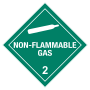
ADR 2.2 ADR_2.2.svg SVG downloaden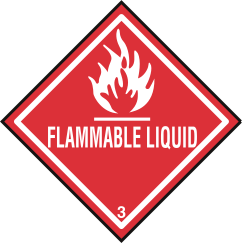
ADR 3 ADR_3.svg SVG downloaden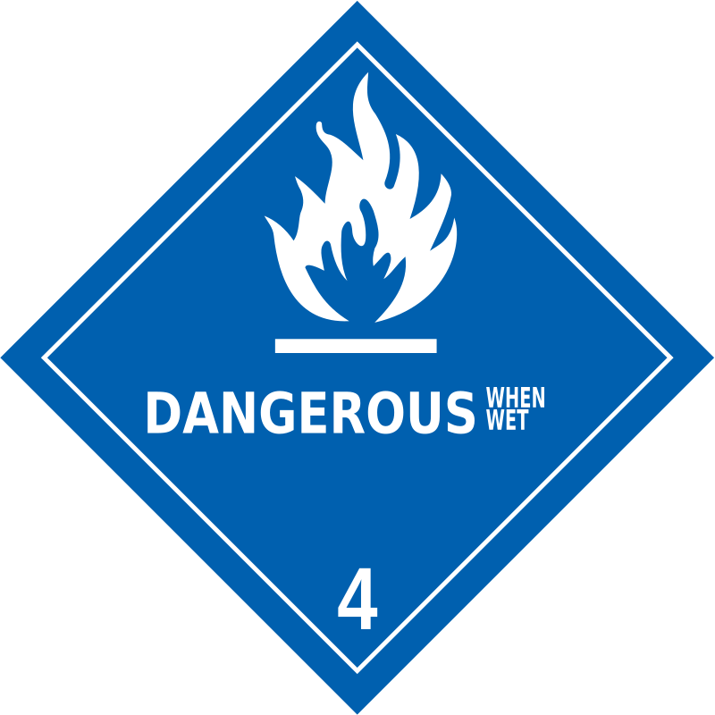
ADR 4.3 ADR_4.3.svg SVG downloaden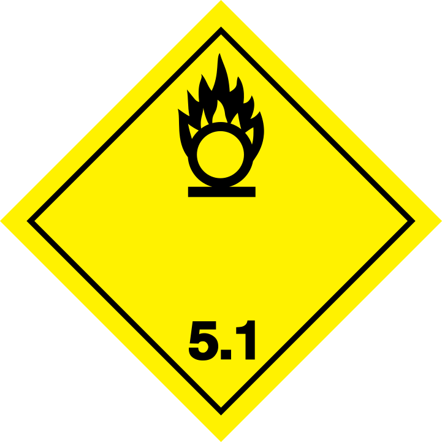
ADR 5.1 ADR_5.1.svg SVG downloaden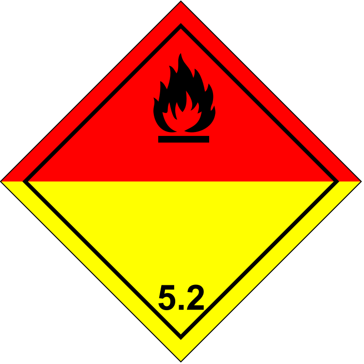
ADR 5.2 ADR_5.2.svg SVG downloaden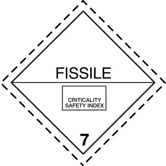
ADR 7E ADR_7E.svg SVG downloaden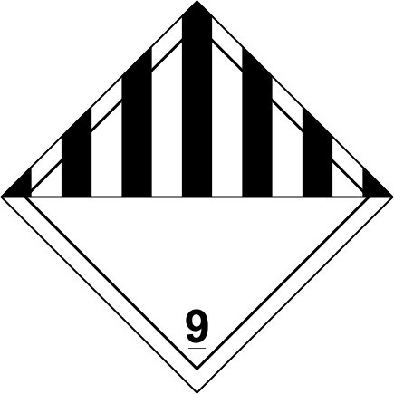
ADR 9 ADR_9.svg SVG downloaden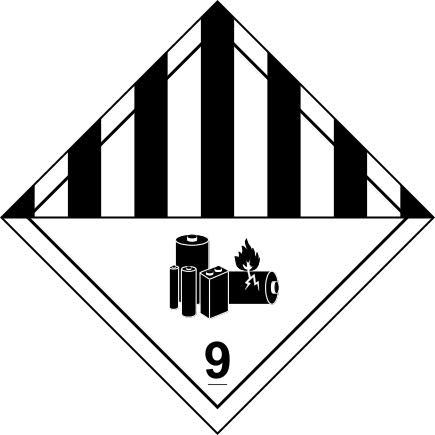
ADR 9A ADR_9A.svg SVG downloaden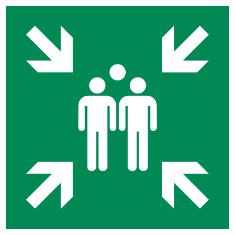
ISO 7010 E007 ISO_7010_E007.svg SVG downloaden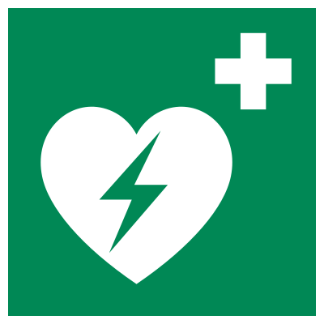
ISO 7010 E010 ISO_7010_E010.svg SVG downloaden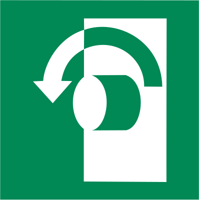
ISO 7010 E018 ISO_7010_E018.svg SVG downloaden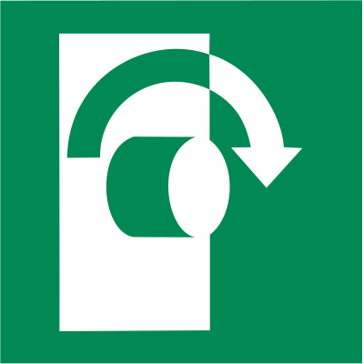
ISO 7010 E019 ISO_7010_E019.svg SVG downloaden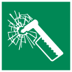
ISO 7010 E025 ISO_7010_E025.svg SVG downloaden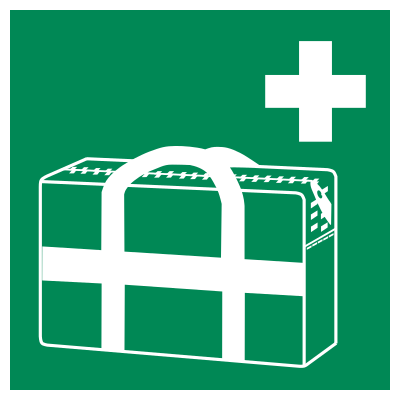
ISO 7010 E027 ISO_7010_E027.svg SVG downloaden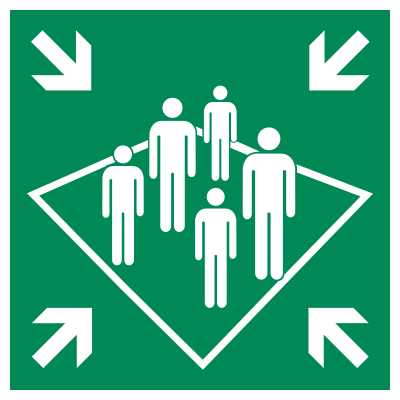
ISO 7010 E032 ISO_7010_E032.svg SVG downloaden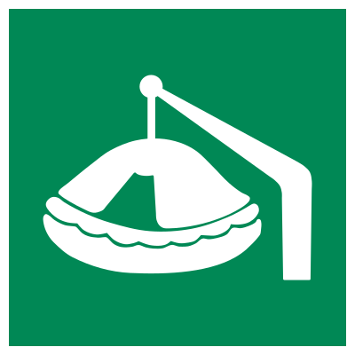
ISO 7010 E039 ISO_7010_E039.svg SVG downloaden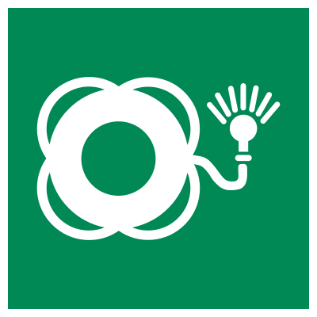
ISO 7010 E042 ISO_7010_E042.svg SVG downloaden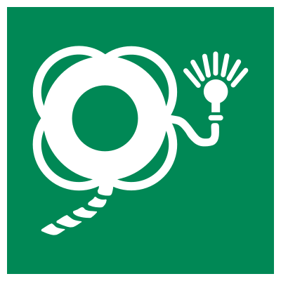
ISO 7010 E043 ISO_7010_E043.svg SVG downloaden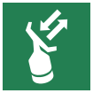
ISO 7010 E047 ISO_7010_E047.svg SVG downloaden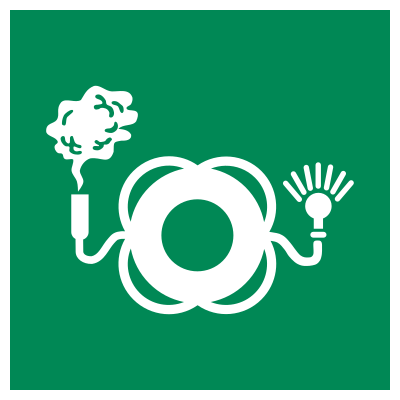
ISO 7010 E068 ISO_7010_E068.svg SVG downloaden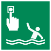
ISO 7010 E069 ISO_7010_E069.svg SVG downloaden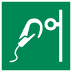
ISO 7010 E072 ISO_7010_E072.svg SVG downloaden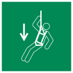
ISO 7010 E073 ISO_7010_E073.svg SVG downloaden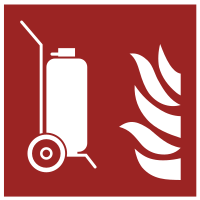
ISO 7010 F009 ISO_7010_F009.svg SVG downloaden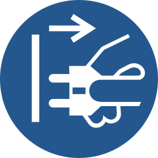
ISO 7010 M006 ISO_7010_M006.svg SVG downloaden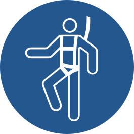
ISO 7010 M018 ISO_7010_M018.svg SVG downloaden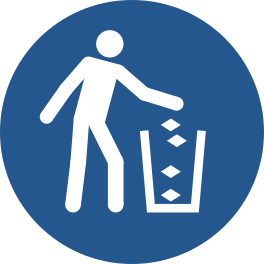
ISO 7010 M030 ISO_7010_M030.svg SVG downloaden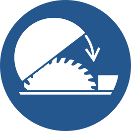
ISO 7010 M031 ISO_7010_M031.svg SVG downloaden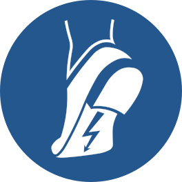
ISO 7010 M032 ISO_7010_M032.svg SVG downloaden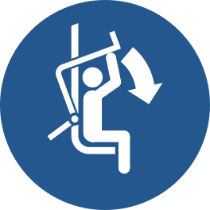
ISO 7010 M033 ISO_7010_M033.svg SVG downloaden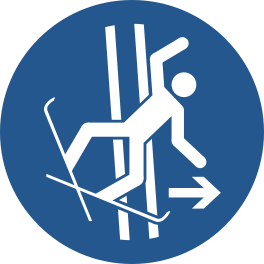
ISO 7010 M035 ISO_7010_M035.svg SVG downloaden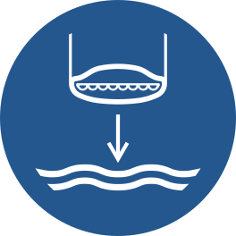
ISO 7010 M039 ISO_7010_M039.svg SVG downloaden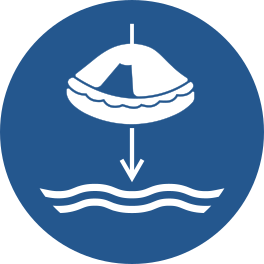
ISO 7010 M040 ISO_7010_M040.svg SVG downloaden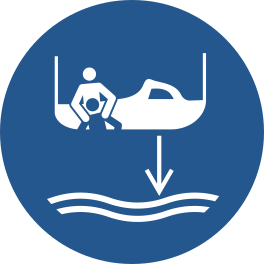
ISO 7010 M041 ISO_7010_M041.svg SVG downloaden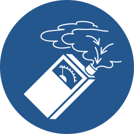
ISO 7010 M048 ISO_7010_M048.svg SVG downloaden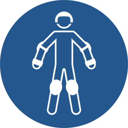
ISO 7010 M049 ISO_7010_M049.svg SVG downloaden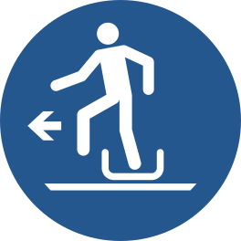
ISO 7010 M050 ISO_7010_M050.svg SVG downloaden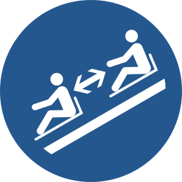
ISO 7010 M052 ISO_7010_M052.svg SVG downloaden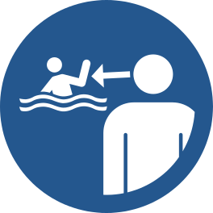
ISO 7010 M054 ISO_7010_M054.svg SVG downloaden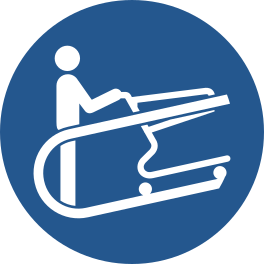
ISO 7010 M060 ISO_7010_M060.svg SVG downloaden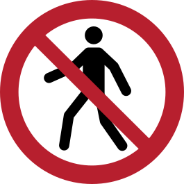
ISO 7010 P004 ISO_7010_P004.svg SVG downloaden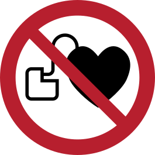
ISO 7010 P007 ISO_7010_P007.svg SVG downloaden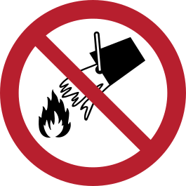
ISO 7010 P011 ISO_7010_P011.svg SVG downloaden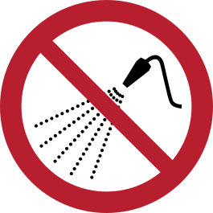
ISO 7010 P016 ISO_7010_P016.svg SVG downloaden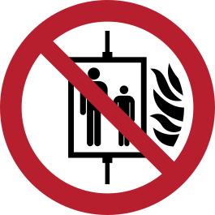
ISO 7010 P020 ISO_7010_P020.svg SVG downloaden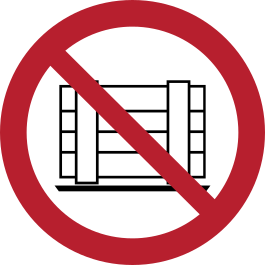
ISO 7010 P023 ISO_7010_P023.svg SVG downloaden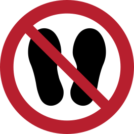
ISO 7010 P024 ISO_7010_P024.svg SVG downloaden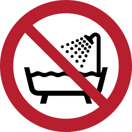
ISO 7010 P026 ISO_7010_P026.svg SVG downloaden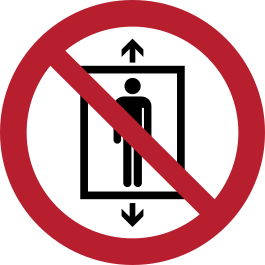
ISO 7010 P027 ISO_7010_P027.svg SVG downloaden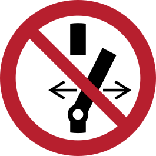
ISO 7010 P031 ISO_7010_P031.svg SVG downloaden